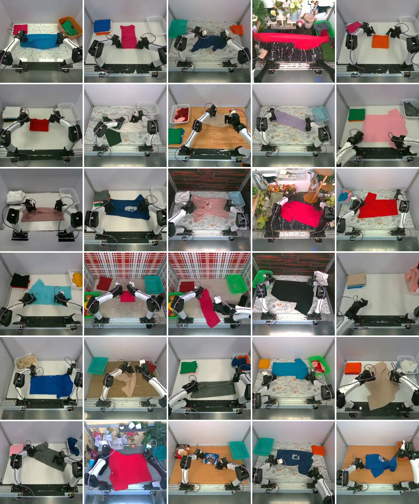
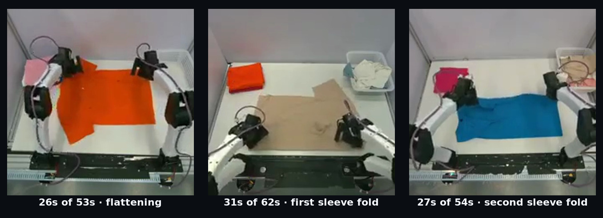
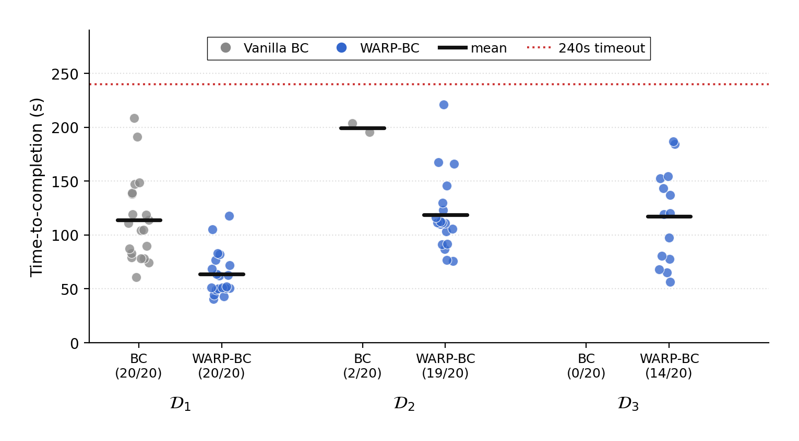

1 / 11 · lead
Introducing WARP-RM: A Warp-Augmented Relative Progress Reward Model for Data Curation 🧵
We gave a folding robot more demonstrations and it got worse. Every extra demo still ended in a folded shirt. The data wasn't bad. It was noisy. The policy couldn't tell productive motion from dead time, and it imitated both equally. So which moments of a demo are actually worth copying?
media/teaser_rollout.mp4
2 / 11 · the problem
Every one of these demos succeeds. The mess is on the inside: dozens of hesitations and missed grasps tucked between the decisive moments. Delete the messy episodes and you throw away the re-grip after a near-miss, the recovery you most want the policy to learn.

media/training_diversity.jpg
3 / 11 · the flaw
To find those moments, you need a per-frame progress signal. The usual self-supervised recipe trains a model to predict each frame's normalized position in the demo, how far it sits from the first frame to the last. But position in the clip is not task progress. Three frames all stamped at the 50% mark show different stages of the fold. Halfway through the recording just means the recording is half over. Progress reward models built on that signal inherit the label noise.

media/noise_5050.jpg · all near 50%, three different stages
4 / 11 · WARP
WARP takes a short window of a successful demo and replays it at smoothly varying speeds, sometimes faster, sometimes slower, sometimes briefly in reverse. Because we set the playback, every frame comes with a progress label, with no human annotation. And because the windows and speeds are drawn at random, a single demonstration yields an essentially unlimited stream of self-labeled clips. The model learns relative progress, not absolute time. That doesn't erase the label noise, but it bounds how far off any single label can be.
media/ar1_draws.mp4
5 / 11 · the signal
On a held-out demo, the model predicts a dense, signed progress signal, answering a local question at every moment: forward, pause, or backward? When the robot drops the shirt, the signal goes sharply negative. A long stall sits near zero. Decisive folding reads strongly positive.
media/vhat_prediction.mp4
6 / 11 · WARP-BC
During behavior cloning, WARP-BC scores each action chunk by how much it advances the task. Productive motion gets amplified; stalls and regressions are filtered out before training. Same demos, but the policy now learns from the moments that count.
media/warp_bc_method.mp4 · aggregation → reweight + filter
7 / 11 · payoff: speed
On the cleanest data tier, WARP-BC is much faster: 63.9s per fold vs 113.8s for vanilla BC, about 1.8x the throughput.
media/grid_tshirt_clean.mp4 · Vanilla BC | WARP-BC, cleanest tier, 2×
8 / 11 · payoff: robustness
We sorted the folds into tiers by length and fed progressively messier demos into training. Plain imitation follows the quality of its data straight down.
Folds finished per hour, as the data gets noisier:
• Vanilla BC: 32 → 1.5 → 0
• WARP-BC: 56 → 27 → 16 (~18x on the middle tier)
It holds up against prior curation methods on the noisiest tier too (full table in the paper). The dataset was never bad. WARP-BC just learns which moments are worth imitating.

media/ttc_distribution_padded.png
9 / 11 · it generalizes
Same method, new task: we pointed WARP-BC at bottle-in-bin, with reward model hyperparameters untuned. 420 real-world trials across both tasks.
media/bottles_rollout.mp4
10 / 11 · bottles, head-to-head
On bottles, WARP-BC averages 11.3s per bottle vs 15.9s, and places 74 of 80 vs 59 of 80. Keep the productive moments, and the policy gets both faster and better.
media/grid_bottles_vanilla_vs_warp.mp4 · Vanilla BC | WARP-BC
11 / 11 · close
The instinct when a robot underperforms is to collect more data. The decisive moments are already in your demonstrations; the challenge is learning to recognize them. The future may belong not to the teams with the most data, but to the teams with the highest signal-to-noise ratio.
📄 Paper: ⟨arXiv URL, fill in⟩
🌐 https://uynitsuj.github.io/warp-rm
💻 https://github.com/uynitsuj/WARP-RM
With Andrew Goldberg, @kavish_kondap, Karim El-Refai, Ethan Ransing, @QianzhongChen, @MacSchwager, @YideShentu, @philippswu, @Ken_Goldberg
@berkeley_ai, @Stanford, @xdofai
media/teaser.mp4